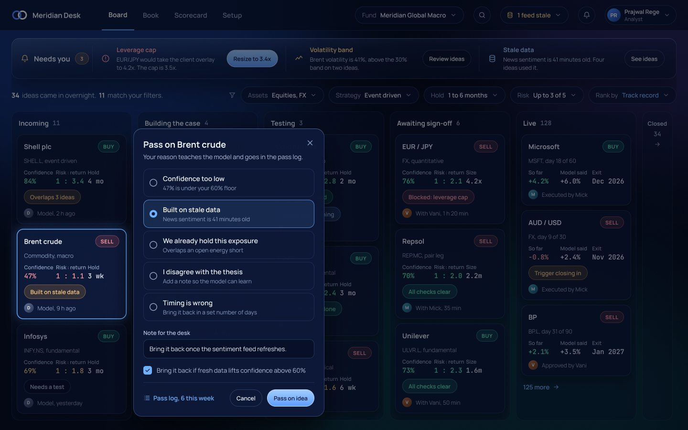
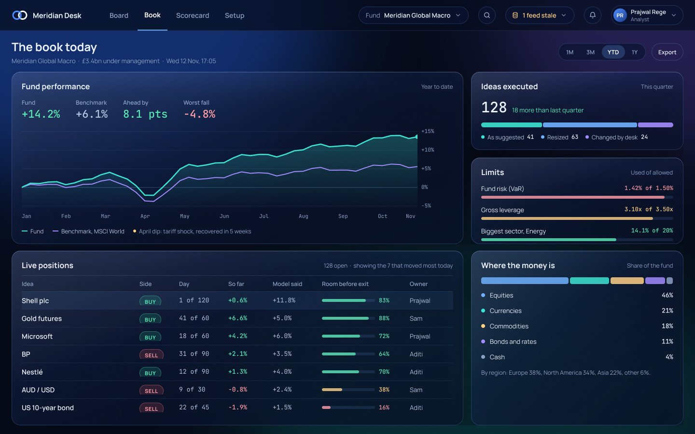
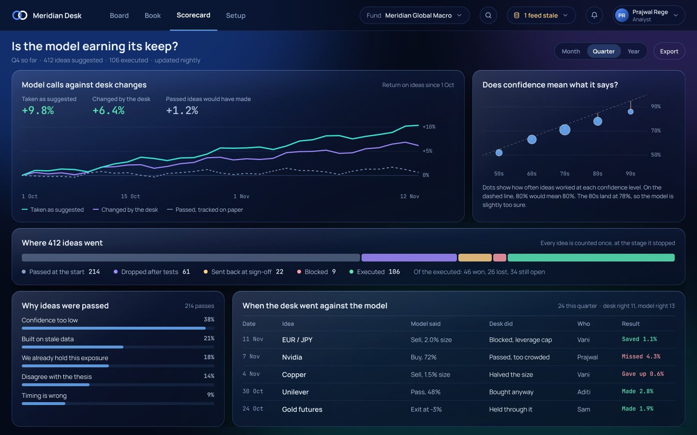

Meridian Desk · AI trade ideas
Meridian Desk, an AI trade recommendation dashboard where a fund’s team checks, tests and approves trade ideas
PRODUCT DESIGN
DESIGN TASK
SOLO
10 SCREENS
View full case study on Behance
Go back
01
OVERVIEW
02
CONTEXT
03
PROBLEM
04
KEY DECISION
05
FINAL DESIGN
Home
Case and tests
Sign-off and live
Scorecard
06
OUTCOME
01 / 06
OVERVIEW
The brief
Design task: a dashboard where a fund’s team can see the trade ideas an AI model suggests, check and test them, get them approved, and see how they did afterwards.
The problem
An AI model suggests many trade ideas every day. Each one has to be checked by an analyst, tested, approved by a portfolio manager and placed by a trader. Today this happens over email, chat and spreadsheets, so nobody can easily see where an idea is, who is working on it, or why it was dropped.
My role
Product designer, working solo on a 48-hour design challenge. Ten screens, the flow between them and this case study.
Tools
Figma
How I’d know it worked
Under half a day
from the model suggesting an idea to someone deciding on it
Every pass
comes with a reason the model can learn from
Under 2 hours
waiting for sign-off, and everyone can see the clock
02 / 06
CONTEXT
Before designing, I learned how
a fund decides on a trade.
I had no trading background. I read about how investment firms use AI ideas, and learned the words people on a desk use, so the screens would speak their language.
ANALYST
Prajwal Rege
Needs to see which overnight ideas are new, stale or already in the book, and to build a case fast.
In the way: ideas arrive as a ranked list with no history.
PORTFOLIO MANAGER
Vani Menon
Needs everything for a decision on one screen, and a clear view of what is waiting for her.
In the way: approvals come by email and chat.
TRADER
Mick Fernandes
Needs the approved size, entry and exit before the price moves.
In the way: approvals arrive without the exit plan.
STAKEHOLDERS
Seven roles touch an idea before it becomes a trade. Three people use the dashboard every day. Four more decide what it is allowed to do: risk and compliance, data science, platform and IT, and senior management.
What I learned, and what it changed
WHAT I LEARNED
WHAT IT CHANGED IN THE DESIGN
A confidence score means little on its own. 84% only matters if you know how often 84% was right before.
The Scorecard checks whether each confidence level matches what really happened.
Ideas are not independent. Three good energy ideas can add up to one oversized bet on oil.
Every idea shows its overlap with the book before anyone backs it.
Fund rules can stop a good idea. Leverage caps, sector limits and restricted lists all apply.
Limit checks run before sign-off, and only the check that fails asks for action.
Passes and overrides say a lot about the model, but only if someone records them.
Passing needs a reason, and every override goes into a log.
03 / 06
PROBLEM
The gap isn’t data.
It’s trust and follow-through.
Ideas arrive as a ranked feed. You can’t tell which ones are new, which use stale data, which clash with what the fund already holds, or who is already working on one.
07:20 SAYING NO
Ideas just sink
Ideas nobody acts on sink down the list. The model never learns why people said no.
09:30 THE CASE
One score hides the reasons
The reasons behind an AI idea hide inside one score, and the details open on a separate page.
11:00 TESTS
Waiting for a quant
Testing means asking a quant and waiting for a spreadsheet only the quant can read.
14:00 SIGN-OFF
Sign-off in chat
Sign-off happens over email and chat. Nobody knows how long an idea has been waiting.
MY APPROACH
Keep every idea in one place and show which stage it is at. Its details, tests and approval open next to the list, so nobody has to switch tools.
04 / 06
KEY DECISION
How the work moves, and
where it lives in the product.
A trade idea passes through seven stages and four people. I matched each stage to the person who owns it and the screen where it happens, then built the product around that.
SEVEN STAGES
Idea generation · Analysis · Testing · Limit checks · Decision · Execution · Monitoring
HOW OTHERS DO IT
Bloomberg, FactSet and LSEG Workspace list ideas like news headlines. Jira and Linear show work moving through stages. None of the trading tools I looked at track the idea itself, so I borrowed the stages.
ALSO DECIDED
The idea panel
Four places in the top bar. The idea panel opens over any of them, so an idea never sends you to a new page.
ALSO DECIDED
Plain names for tests
History replay, Forward paths and Shock scenarios say what they do. “Back test”, “Monte Carlo” and “stress test” mean little to a busy portfolio manager.
ALSO DECIDED
What would prove it wrong
Good analysts decide their exit before they enter. Making it part of every case turns that habit into a feature.
05 / 06
FINAL DESIGN
I followed one idea
through one day.
Shell plc, a buy the model suggested at 07:02. Three people touch it before it becomes a trade. Each stop below shows what got in their way and what I designed for it.
THE DAY
06:55 First login · 07:00 Morning board · 07:20 Saying no · 09:30 The case · 11:00 Tests · 14:00 Sign-off · 15:30 Live · 17:00 Scorecard
07:00 MORNING
34 ideas arrived overnight.
Home starts with the work, not the data. What needs a decision comes first, then your ideas in progress with the stage each one is at, then the best new ideas. The full board, one column per stage, is one click away.

Home
Only what needs a person, each with its own button. Each idea in progress shows the stage it has reached.

First login
One question on the first login decides which columns the board opens on.

Saying no
Passing is a real action with a reason. Five reasons cover most passes. One click, no essay.
09:30 THE CASE · 11:00 TESTS
Three tests, no quant needed.
The case opens as a panel over the page you are on. It shows why the model likes the idea, where the price could go and what it does to the book, and asks what would prove the idea wrong. Three tests run from the same panel, and the verdict is written in words with one suggested change.

The case
Each reason shows how hard it pushed the score, including the one against it.

Tests
For Shell it tightened the exit from -3.5% to -3.0%.
14:00 SIGN-OFF · 15:30 LIVE
Vani signs off without a meeting.
Sign-off is the third stage of the same panel. Limit checks run before Vani opens it, and only the one that needs her gets a button. She can approve, approve smaller, send it back or block it. Once Shell goes live, the conditions from the case keep watching.

Sign-off
Six checks. Five are clear, so only one gets a button.

The Book
Room before exit: how close a trade is to its “prove it wrong” line.
17:00 SCORECARD
Did the model earn its keep?
The Scorecard closes the loop. It compares ideas taken as suggested with the ones the desk changed, checks if confidence matches reality and lists each override with its result.

Scorecard
Every “no” at 07:20 makes tomorrow’s 07:00 a little better.
Trading floors run dark screens in dim rooms, so the product is dark. Glass is saved for one job: the panel that slides over the page, so you can still see where you were.
06 / 06
OUTCOME
What I’d do next
Trade-offs I made
FLOW, NOT DETAIL
The board shows flow, not detail. A card has room for five facts, so everything else waits for the panel.
SIX COLUMNS
Six columns fit a 1440 screen. On a laptop, Closed folds away and Live shrinks to a count.
PLAIN NAMES
I renamed finance terms so anyone on the desk can follow. Specialists may want the originals, so they stay in tooltips.
What I’d test with a real desk
TRUST
Do analysts trust the reasons behind the score, or still open the model’s raw output?
MORNINGS
Does writing “what would prove it wrong” slow people down in the morning, or save them later?
SIGN-OFF TARGET
Is two hours the right sign-off target, or should it depend on the size of the trade?
THAT WAS THE SHORT VERSION
The full case study covers the research, the people and the structure, then follows Shell plc through the whole day with all ten screens.
View full case study on Behance
Next project
Ally
02
An AI copilot for a home bakery